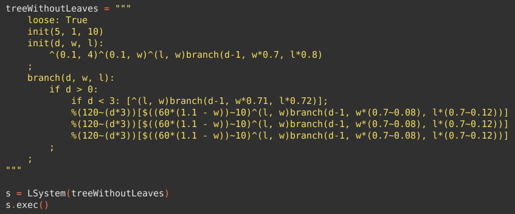
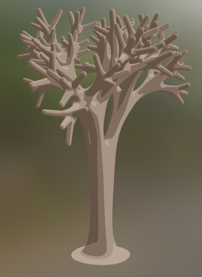
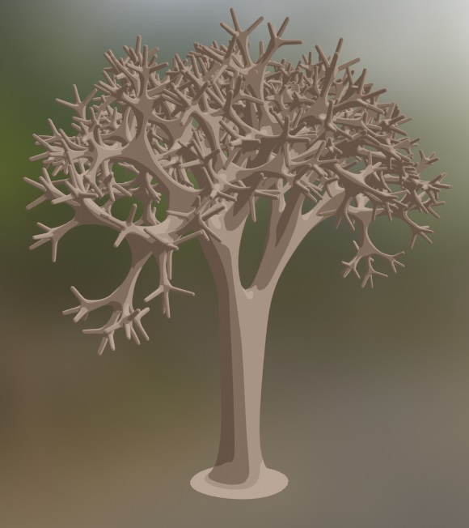
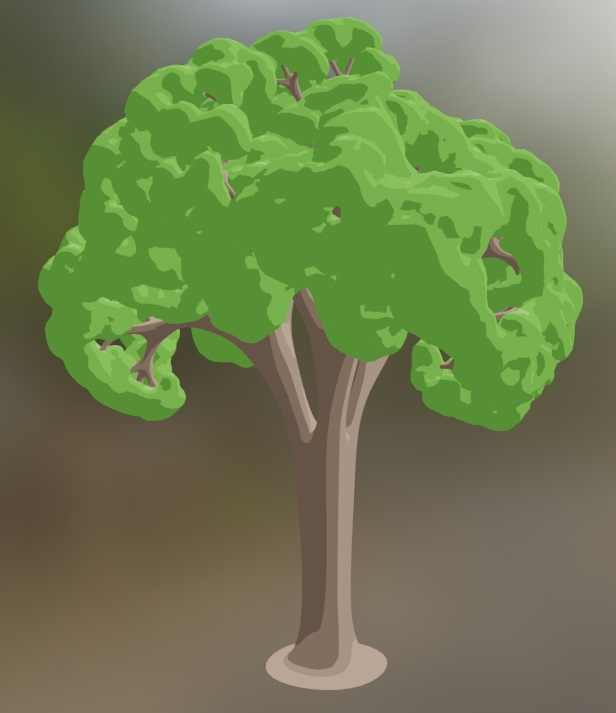
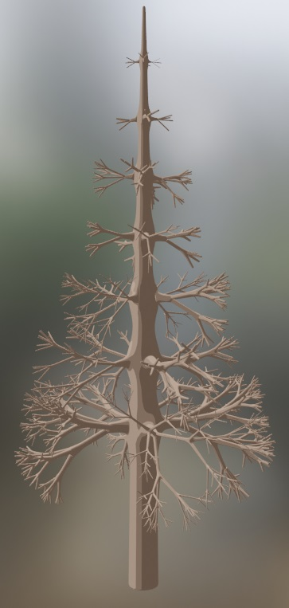
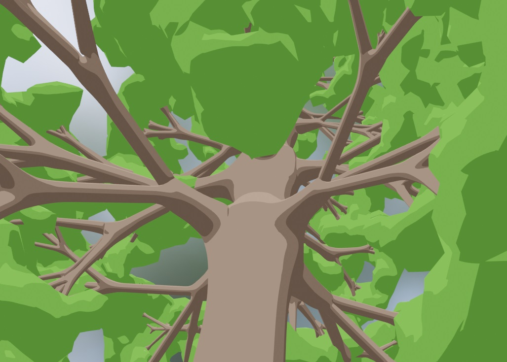
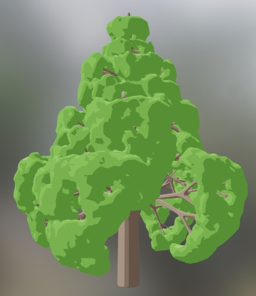
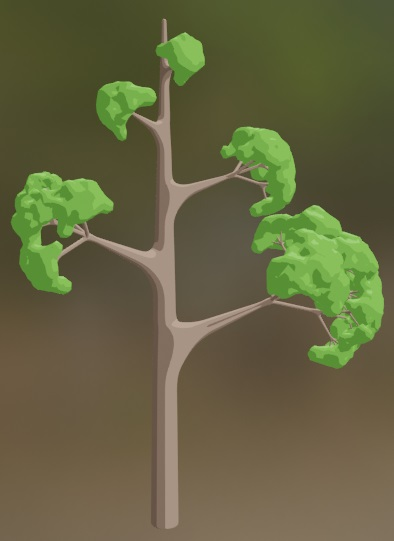
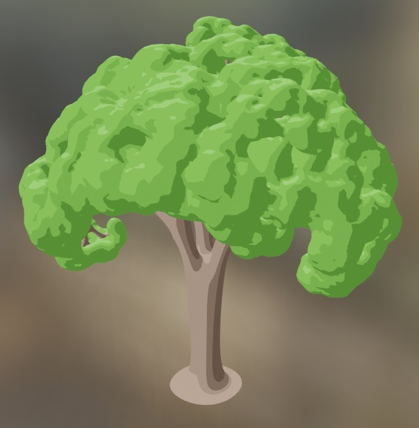

Procedural Trees
This project was developed as a final project for a Master’s course.
In this project we have created a tree generation algorithm based on L-Systems. The code is implemented as a Python script for Blender. It contains a class (LSystem) responsible for reading and interpreting a set of rules to create a tree using Blender.
For parsing the grammar we use Lark, which is a Python library (included in the source files), it is similar to other parsing libraries such as ANTLR.
Trees are generated in two phases: branches and leaves. To generate the branches we create a set of edges representing the skeleton of the tree, then, we apply the skin modifier to give volume to the edges. We also use the subdivision modifier to get a more realistic result. For the leaves we use metaballs.
Example of grammar and resulting tree

d = 7

d = 5

Results
     